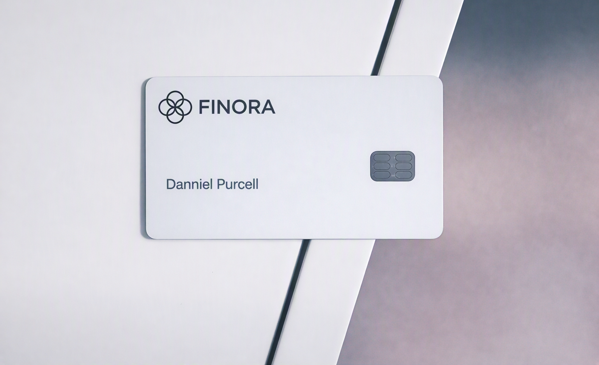

How to get a clearer view of your money
Simple ways to understand your balance, spending, and everyday financial patterns.
Read articleTHE FINORA JOURNAL
Practical ideas, useful guidance, and thoughtful perspectives for your everyday financial journey.
Simple ways to understand your balance, spending, and everyday financial patterns.
Read articleGood technology can make financial decisions clearer without making life more complicated.
Read article
Build steady habits that turn long-term financial goals into practical progress.
Read article
Use a simple spending routine to stay aware of your money and make room for what matters.
Read article
Security should protect your money while keeping everyday access straightforward.
Read article
A clear plan can help you handle today’s needs while continuing to build toward tomorrow.
Read article